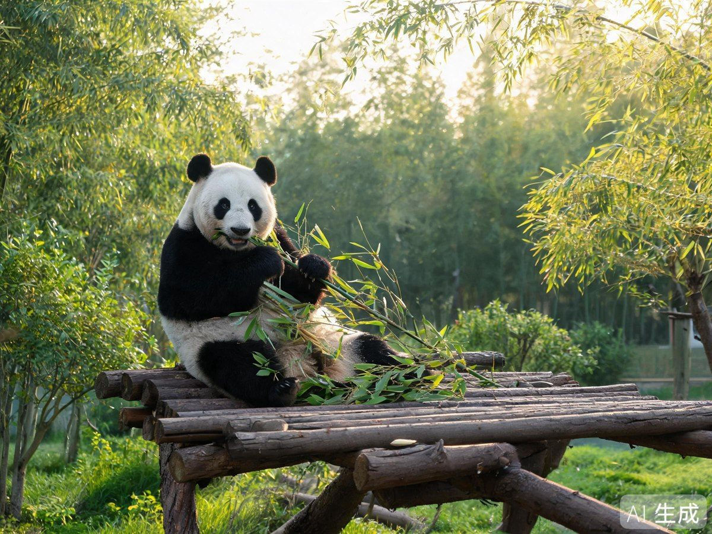
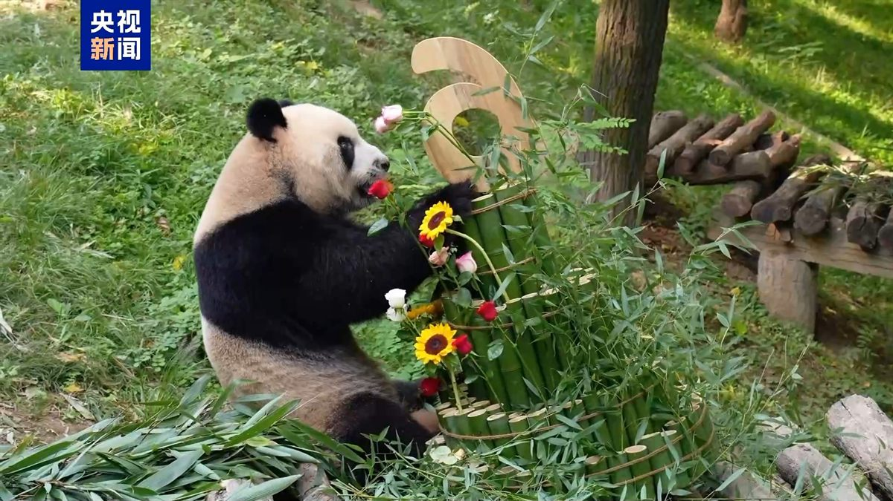
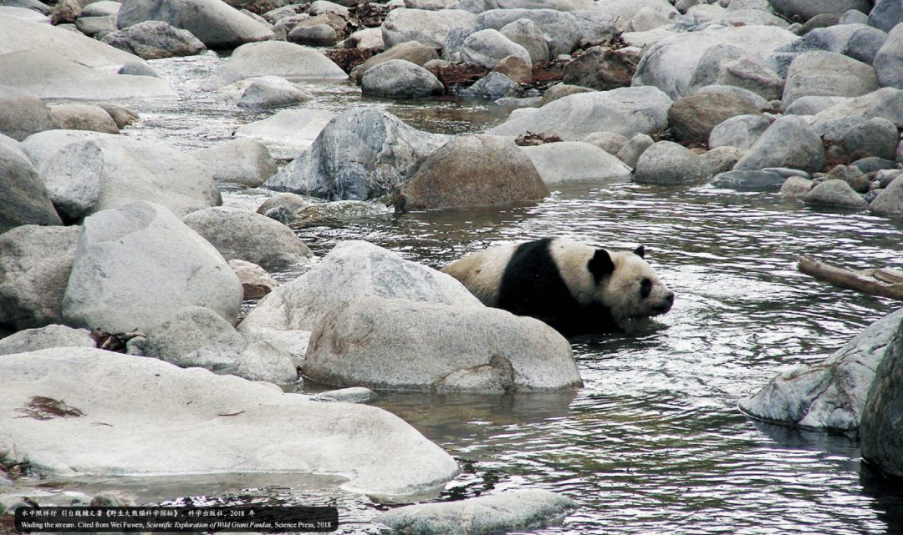
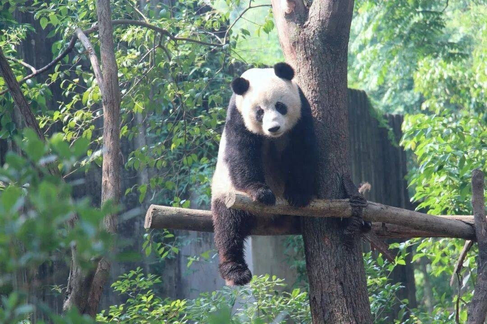

Panda Base · 国宝家园
近距离观赏国宝的最佳去处，成都最生动的名片
上百只圆滚滚的国宝在这里啃竹子、爬树、打滚。早起一小时，换一整天的治愈——这就是成都熊猫基地的魔力。
Introduction
成都大熊猫繁育研究基地（熊猫基地）是全球最重要的大熊猫科研、繁育与公众教育基地之一。这里竹林环绕、绿意盎然，放养着从初生幼崽到成年熊猫在内的一百余只大熊猫，还可看到小熊猫、黑颈鹤等珍稀动物，是亲子游与「萌照」圣地。
「顶流明星」常驻，偶遇随缘、萌值拉满。
承担国家级大熊猫繁育科研，多次向海内外输送大熊猫。
占地约千亩的竹林园区，孔雀、小熊猫自由漫步其间。
Deep Dive

大熊猫的日常约一半时间在进食、一半在睡觉。清晨开园后至上午10点是进食高峰：啃竹子、剥竹笋、喝水打滚，是一天中「营业」最努力的时候，务必赶早。

月亮产房与太阳产房是熊猫幼崽的「幼儿园」。7-9月产仔季，运气好能看到粉嫩的小熊猫趴窝的萌态；非产仔季也有亚成体幼崽在活动场玩耍。

园区大且多坡，建议进园先坐观光车直达山顶的月亮产房，再沿路「倒走」下山：月亮产房→成年熊猫别墅→小熊猫区→太阳产房→熊猫厨房→出口，省力又不错过精华。

熊猫基地位于成华区熊猫大道，紧邻成都大熊猫博物馆，可安排3小时以上的「追熊」半日游。
FAQ
Key Points
7:30赶头班入园，8-10点看熊猫「干饭」，值回票价。
先坐车到山顶月亮产房，再倒走下山，省体力。
实名预约购票，节假日可售罄，务必提前。
勿投喂、勿开闪光灯，安静欣赏萌态。